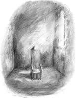

III. CİLT
JOHN USKGLASS

Hanover Meydanı’ndan Bay Norrell’e göre, tıpkı eski bir paltonun güvelerini ve tozunu silkerek temizleyeceğiniz gibi çağdaş büyüden de John Uskglass’a ait her şeyin temizlenmesi gerek.
Peki geriye ne kalacağını düşünüyor? John Uskglass’ı atarsanız elinizde yalnızca bir boşlukla kalırsınız.
Jonathan Strange, İngiliz Büyüsü Tarihi ve Uygulaması’na Önsöz’den, John Murray, Londra, 1816.